AI Academy · Level 2 · Grade 7 · Week 4 · Student lesson
Trace Tables
Learn to understand, design, build, test and explain AI systems responsibly.
Project: Transparent Book Recommender
Before you start
Week 3: conditions use the current value of a variable.
Plan time to read, investigate and explain. Keep predictions separate from observations.
Student lesson · 1 of 14
Your mission
Your learning target
I can trace variable values before and after each loop iteration.
I can use the excluded stop value in range correctly.
I can explain initialization and test zero one and several iterations.
Remember before reading
Close your notes first. A rough first answer helps us choose the right starting point; it is not a score for your ability.
Without opening the old lesson, explain one key idea from Branching Logic. Give an example and a mistake that the idea helps you avoid.
Without opening the old lesson, explain one key idea from Precision in Algorithms. Give an example and a mistake that the idea helps you avoid.
After trying, check the relevant lesson or ask your teacher. Change the part of your explanation that the evidence shows was wrong.
Week 4: Trace Tables
A trace table records changing state and reveals reasoning errors.
THINKER MISSION
Trace variables through a score-based game helper.
Thinker name and date:
Readiness for the connected explanation
Starting with total = 2, what does total = total + 3 store?
This week’s end goal
By the end, I can make a trace table for a for-loop, including zero iterations.
Student lesson · 2 of 14
Notice the evidence
PICTURE STORY
Notice → Predict → Explain
Begin with visible evidence. Do not explain more than the picture and information support.
MYSTERY
The learners must use trace tables to solve a problem. What information do they have? What decision or calculation do they make? What would count as evidence that it worked?
Three observations (what you can point to):
My prediction and the clue supporting it:
A closer explanation
Imagine adding numbered counters: first 1, then 2, then 3. A loop can repeat the same addition with a different number each time. This week you will predict each change before running a short Python script. Tracing repeated calculations prepares you to inspect the data processing used in larger AI applications.
In for turn in range(1, 4), Python supplies 1, 2 and 3 in order. The start is included and the stop is excluded. The indented body runs once for each supplied value. The colon and four-space indentation mark that body. This lesson uses integer range values with the default positive step of 1.
Student lesson · 3 of 14
See how it works
VISUAL MECHANISM
Input → Process → Output
Trace the information. At each stage, ask what changed and how you could test it.
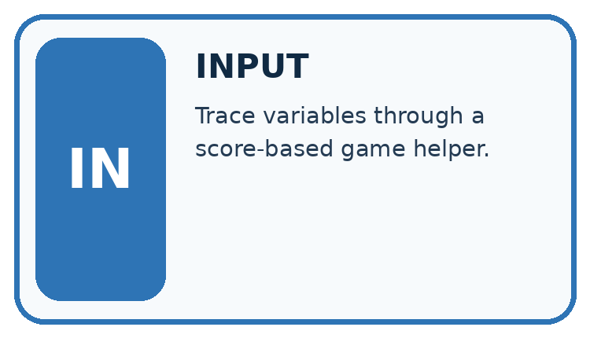
↓
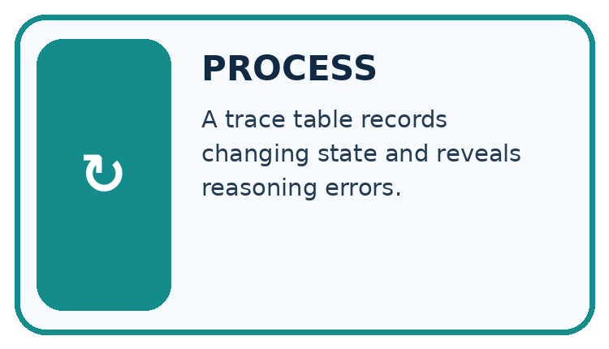
↓
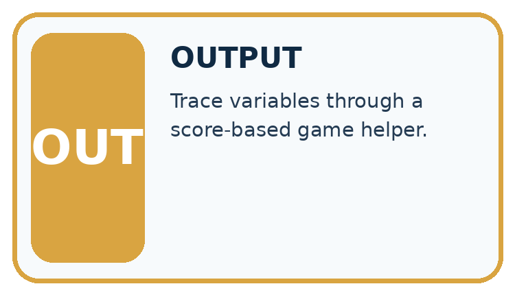
Which stage could fail even when the other two are correct? Explain:
A closer explanation
total = 0
for turn in range(1, 4):
total = total + turn
print(total)State after each addition
The output is 6. Before the first iteration, total is 0. Each assignment reads the previous total and adds the current turn. After turn 3, the range is exhausted, so execution continues after the loop. The table records state; it does not create extra instructions.
Connect the picture and the explanation
Point to the input, the deciding step and the result in this week’s visual. Explain the same step in ordinary words. A picture helps when you can say what each part represents.
Student lesson · 4 of 14
Compare the cases
CASE GALLERY
Four Tests, Four Kinds of Evidence
A system is not understood until it survives more than one comfortable example.


NORMAL CASE: predict and name evidence. BOUNDARY CASE: predict and name evidence.


MISSING INFORMATION: predict and name evidence. TRANSFER CASE: predict and name evidence.
Which case is most likely to reveal a hidden assumption? Why?
Change one thing in the pictured case
Change: Use range(0) instead of range(4).
Prediction: The loop body never runs and the printed total is 1.
Reason: The iterable contains no turn values; the initial assignment still happened.
Student lesson · 5 of 14
Words that unlock the idea
VOCABULARY LAB
Words You Can Use to Reason
A definition matters when you can recognize the idea, use it, and contrast it with a near-miss.
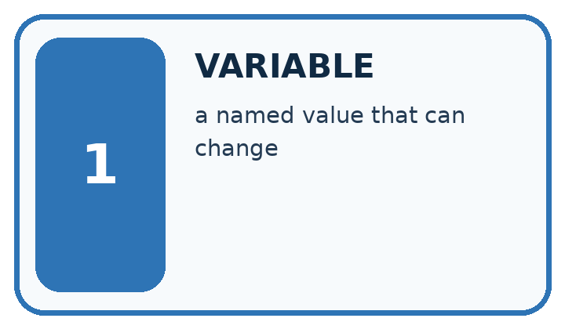
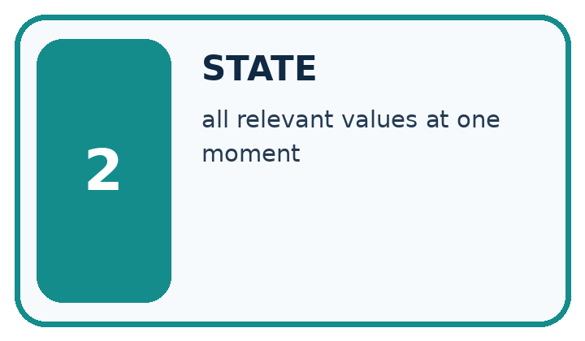
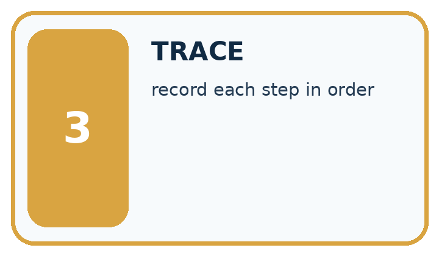
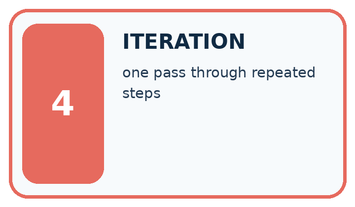
| Word | My own example | Not this / boundary |
|---|---|---|
| variable | A named reference to a value that can be used or changed in a program. | |
| state | The current values and information that determine what a process does next. | |
| trace | A record of the successive states, decisions or information transformations in a process. | |
| iteration | One repeat of a process, often followed by inspection and revision. |
Words used in the closer explanation
| Word | Meaning |
|---|---|
| Loop | A block of instructions that can run repeatedly |
| Accumulator | A variable that keeps a running result |
| Initialization | Giving a variable its starting value |
| Trace table | A record of variable values as instructions execute |
Student lesson · 6 of 14
Follow a worked example
WORKED EVIDENCE
Reason Step by Step
Predict first. Then check each step. A correct answer without visible reasoning is incomplete evidence.
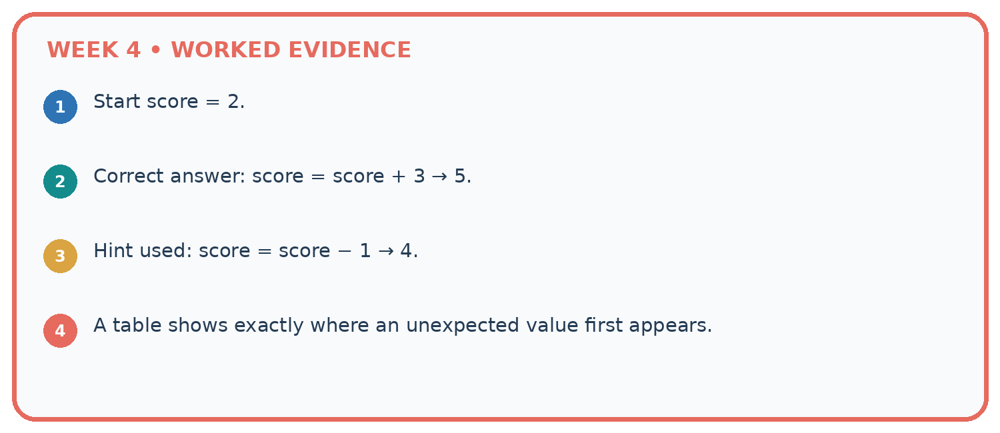
1. Start score = 2.
2. Correct answer: score = score + 3 → 5.
3. Hint used: score = score − 1 → 4.
4. A table shows exactly where an unexpected value first appears.
Recalculate, retrace, or restate the reasoning in your own representation:
CHECK Did the evidence answer the exact question? Did the total, path, or source record stay consistent?
A closer explanation
| Range expression | Values supplied | Number of iterations |
|---|---|---|
| range(1, 4) | 1, 2, 3 | 3 |
| range(1, 2) | 1 | 1 |
| range(1, 1) | No values | 0 |
| range(4) | 0, 1, 2, 3 | 4 |
With one argument, range starts at zero. range(4) supplies four values but none is 4. If the worked script uses range(1, 1), the body never runs and the initialized total remains 0. Do not rely on a variable first assigned inside a loop: a zero-iteration run might never assign it.
Learn from the worked case
Cover the result before checking it. Say what is given, choose the procedure, and follow one step at a time. Then uncover the result and explain your first mismatch. Ask why a step is allowed, not only what number it produces.
A pictorial worked case: Trace Tables
A fictional reading-token jar starts with one token and gains three per round.
The facts we will use
Python: total=1; for turn in range(4): total=total+3; after the loop print(total).
The update is inside the loop; print is outside.


Read the picture one step at a time
Why this result follows
The turn value labels an iteration; it is not the number added. The fixed update adds three each time. Four iterations take the total from 1 to 13. Keeping print outside the loop produces one final display rather than four intermediate displays. Initialise total before the loop so a zero-iteration run still has a defined value.
What this example does not establish
This finite loop does not establish behavior of a while-loop with a different update or stopping condition.
Student lesson · 7 of 14
Find and repair a mistake
ERROR DETECTIVE
Compare → Diagnose → Repair
Do not patch the answer. Find the earliest unsupported assumption, wrong step, or weak evidence.
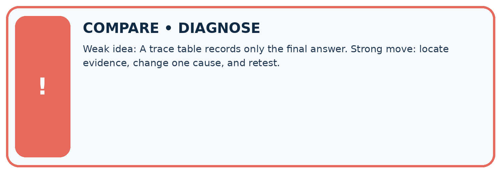
| Evidence record | Expected | Actual | Likely cause / next test |
|---|---|---|---|
| normal case | works | ||
| boundary case | stated rule | ||
| missing input | safe response | ||
| fresh transfer | generalizes |
Repair one cause. Why is this repair better than changing several things?
A closer explanation
Write the expected range values and trace table before running. Keep predicted and observed output separate, then explain the first row where they differ. For a loop that should add a fixed amount repeatedly, zero iterations should preserve the initial amount. One iteration checks one update; several check accumulation.
Student lesson · 8 of 14
Practise together
LOGIC STUDIO
Trace Before You Run
Block code, pseudocode, tables, and diagrams are different ways to expose the same reasoning.

SET evidence_record PREDICT expected_result RUN one normal case and one boundary case COMPARE actual_result with expected_result IF different: locate first cause; change one factor; RETEST EXPLAIN result, limitation, and next safe step
Trace one input. Which line changes the state or chooses a path?
A closer explanation
total = 0
for turn in range(1, 4):
total = 0
total = total + turn
print(total)This faulty version prints 3. The extra reset discards earlier additions on every iteration. Remove the indented reset while keeping initialization before the loop. Then test zero, one and several iterations: the one-iteration case alone cannot reveal this reset bug.
Moving print(total) into the correct loop produces three lines, 1 then 3 then 6. Moving it out produces only the final 6. Trace both values and output events. A loop follows written instructions; repeating them does not make the program learn.
Practise with less help: Trace before running
Use workbook W2 for the connected example “Loops and trace tables”. First fill the input and rule boxes. Try the middle steps before asking for a hint. After a hint, try the next step yourself.
| Plan | Do | Check |
|---|---|---|
| What is given? Which rule or procedure applies? | Record each intermediate step. | Does the result follow? What remains unknown? |
Explain your trace to a partner. Your partner points to one step to check. Swap roles on the next case. Each person writes their own explanation.
Check your reasoning
Use the worked case for Loops and trace tables. Proposed explanation: “The stop value is included”. Decide whether this explanation is supported. Point to the step or supplied fact that decides; explain your repair if needed.
Answer on your own before discussion. If you are unsure, say which step you need help with.
Explain the picture
Move print inside the original loop. What sequence is displayed?
This is supported practice. Keep the separately named independent case for an attempt before feedback.
Student lesson · 9 of 14
Run the investigation
EVIDENCE LAB
Predict → Test → Record → Explain
Keep expected and actual results separate. Surprises are useful data when recorded honestly.
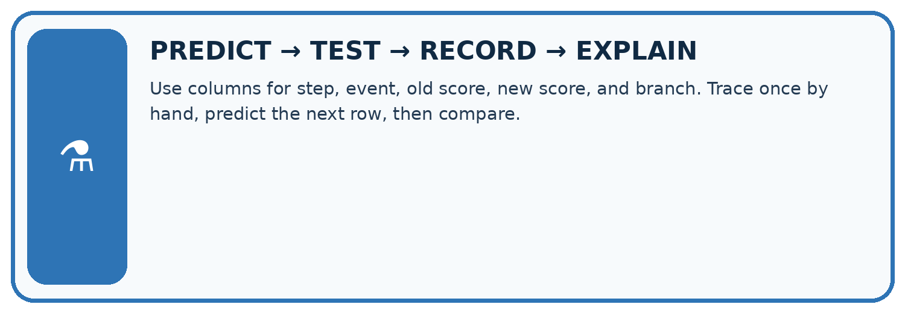
Use columns for step, event, old score, new score, and branch. Trace once by hand, predict the next row, then compare.
| Test / input | Prediction | Actual | Evidence / calculation | Change or keep? |
|---|---|---|---|---|
| normal | ||||
| boundary | ||||
| missing | ||||
| fresh transfer |
What did the hardest test teach you that the normal test did not?
Plan → try → check
Before trying: what do I expect, and why? While trying: which step could first go wrong? Afterwards: what did I actually observe, and what should change? Keep “not run” if you only traced the procedure.
Student lesson · 10 of 14
Build your understanding
MASTERY
From Knowing the Word to Owning the Idea
Move upward only when you can produce evidence without copying the worked example.

1 • NAME: Define the concept without repeating the textbook.
2 • TRACE: Show the information, state, branch, calculation, or evidence path.
3 • APPLY: Solve a different example independently.
4 • CHALLENGE: Find a boundary case, counterexample, or unfair outcome.
5 • EXPLAIN LIMITS: Say when the result should not be trusted or used alone.
My strongest evidence of independent understanding:
Student lesson · 11 of 14
Connect your project
CUMULATIVE PROJECT
Transparent Book Recommender
Every week adds one inspectable piece. The system must show how it reached a result.
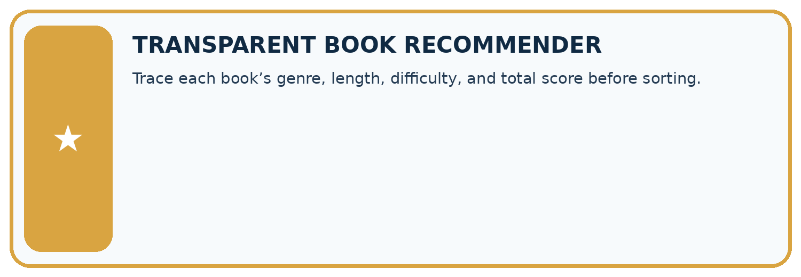
THIS WEEK’S CHECKPOINT Trace each book’s genre, length, difficulty, and total score before sorting.
SYSTEM MAP Reader need → allowed inputs → transparent rule or score → ranked candidates → explanation → test record → human decision
What will you add, change, or verify in the project this week?
What should remain under human control?
RESPONSIBLE DESIGN Collect only necessary information. Show uncertainty and limits. Never confuse a ranking with a fact about a person.
Evidence for your project
Trace recommender loops with current item, eligibility, score and current best so each update can be explained.
Student lesson · 12 of 14
Show what you know
INDEPENDENT MASTERY PROOF
Explain • Transfer • Test • Defend
Complete this page without copying the worked example. Your reasoning matters more than decoration.
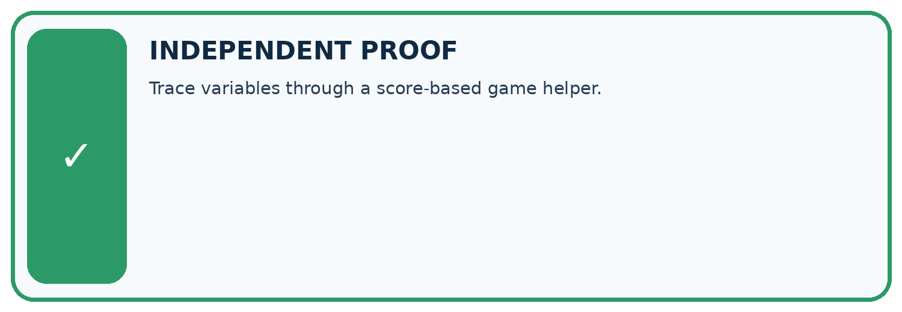
CHALLENGE Trace variables through a score-based game helper.
1. My fresh example, trace, calculation, or design:
2. My evidence that it works (include a boundary or missing-data case):
3. One limitation, fairness concern, or situation needing human review:
SELF-CHECK □ I explained the mechanism □ I used evidence □ I tested a fresh case □ I named a limitation □ I can answer ‘why?’
Student lesson · 13 of 14
Study a complete case
Week 4 Worked case
Use the supplied details to practise the weekly concept before attempting the independent question. This case extends the illustrated lesson.
The situation
Set score=2; add 3; if score>4 subtract 1; double score.
The question
Trace every value.
Worked explanation
2,5,4,8. The comparison is evaluated at 5 before subtraction.
Explain it in your own words
Which detail supports the answer, and why does it matter?
Trace the supplied case visually
Keep the state after each instruction
| Evidence or stage | Value or result |
|---|---|
| Set score | 2 |
| Add 3 | 5 |
| If greater than 4, subtract 1 | 4 |
| Double | 8 |
Set score=2; add 3; if score>4 subtract 1; double score.
Trace every value.
2,5,4,8. The comparison is evaluated at 5 before subtraction.
Student lesson · 14 of 14
Try a new case independently
Independent case: Build a repeated addition independently
A box starts with 5 counters. Each round adds 2 counters. Use rounds = 3, an initialized total and for turn in range(rounds). Print the final total once after the loop. Trace the totals and predict fresh runs with rounds 0, 1 and 3. Assume rounds is a nonnegative integer.
Attempt this case before feedback. Record any help. Earlier examples below are further practice; a case already practised with feedback cannot establish fresh transfer.
Week 4 Independent application
Close the worked explanation. Apply the idea to this different question without copying.
Set score to 2. Add 3, then double the result. Record the score after each operation. What changes if you double before adding?
My answer, with a trace, calculation or supporting evidence
Create and test
Change one relevant detail. Predict the result before testing. Include a boundary or missing-information case when it helps reveal a limit.
My changed input and expected result
Connect to your project
Trace each book’s genre, length, difficulty, and total score before sorting.
The evidence I will keep
Your teacher has the independent answer and scoring criteria. Complete the matching workbook week to keep your practice evidence together.
Transfer practice from the original programme
Start score=1; add 4; if score>3 subtract 2; double score. Record score after every operation. A student evaluates the condition using the initial value. Locate the divergence.
Use feedback to improve
Attempt the independent case before hints. Record whether you worked alone, used a hint or followed a model. After feedback, fix the first unsupported step and explain why it changed. A later check uses a changed case, not a copied answer.